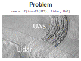

Books
-

Tangible Modeling with Open Source GIS
Petrasova, A., Harmon, B., Petras, V., Mitasova, H., 2015. Tangible Modeling with Open Source GIS. Springer International Publishing. doi:10.1007/978-3-319-25775-4
This book presents a new type of modeling environment where users interact with geospatial simulations using 3D physical models of studied landscapes. Multiple users can alter the physical model by hand during scanning, thereby providing input for simulation of geophysical processes in this setting. The authors have developed innovative techniques and software that couple this hardware with open source GRASS GIS, making the system instantly applicable to a wide range of modeling and design problems. Since no other literature on this topic is available, this book fills a gap for this new technology that continues to grow. Tangible Modeling with Open Source GIS will appeal to advanced-level students studying geospatial science, computer science and earth science such as landscape architecture and natural resources. It will also benefit researchers and professionals working in geospatial modeling applications, computer graphics, hazard risk management, hydrology, solar energy, coastal and fluvial flooding, fire spread, landscape, park design and computer games.
-
Fusion of high-resolution DEMs for water flow modeling
Petrasova, A., Mitasova, H., Petras, V., Jeziorska, J. 2017. Fusion of high-resolution DEMs for water flow modeling. Open Geospatial Data, Software and Standards.
New technologies for terrain reconstruction have increased the availability of topographic data at a broad range of resolutions and spatial extents. The existing digital elevation models (DEMs) can now be updated at a low cost in selected study areas with newer, often higher resolution data using unmanned aerial systems (UAS) or terrestrial sensors. However, differences in spatial coverage and levels of detail often create discontinuities along the newly mapped area boundaries and subsequently lead to artifacts in results of DEM analyses or models of landscape processes. To generate a seamless updated DEM, we propose a generalized approach to DEM fusion with a smooth transition while preserving important topographic features. The transition is controlled by distance-based weighted averaging along the DEMs' blending overlap with spatially variable width based on elevation differences. We demonstrate the method on two case studies exploring the effects of DEM fusion on water flow modeling in the context of precision agriculture. In the first case study, we update a lidar-based DEM with a fused set of two digital surface models (DSMs) derived from imagery acquired by UAS. In the second application, developed for a tangible geospatial interface, we fuse a georeferenced, physical sand model continuously scanned by a Kinect sensor with a lidar-based DEM of the surrounding watershed in order to computationally simulate and test methods for controlling storm water flow. The results of our experiments demonstrate the importance of seamless, robust fusion for realistic simulation of water flow patterns using multiple high-resolution DEMs.
-
Tangible geospatial modeling for collaborative solutions to invasive species management
Tonini, F. Shoemaker, D. Petrasova, A., Harmon, B. A., Petras, V., Cobb, R. C., Mitasova, H., and Meentemeyer, R. K., 2017. Tangible geospatial modeling for collaborative solutions to invasive species management. Environmental Modelling & Software.
Managing landscape-scale environmental problems, such as biological invasions, can be facilitated by integrating realistic geospatial models with user-friendly interfaces that stakeholders can use to make critical management decisions. However, gaps between scientific theory and application have typically limited opportunities for model-based knowledge to reach the stakeholders responsible for problem-solving. To address this challenge, we introduce Tangible Landscape, an open-source participatory modeling tool providing an interactive, shared arena for consensus-building and development of collaborative solutions for landscape-scale problems. Using Tangible Landscape, stakeholders gather around a geographically realistic 3D visualization and explore management scenarios with instant feedback; users direct model simulations with intuitive tangible gestures and compare alternative strategies with an output dashboard. We applied Tangible Landscape to the complex problem of managing the emerging infectious disease, sudden oak death, in California and explored its potential to generate co-learning and collaborative management strategies among actors representing stakeholders with competing management aims.
-
Immersive Tangible Geospatial Modeling
Tabrizian, P., Petrasova, A., Harmon, B. A., Petras, V., Mitasova, H., and Meentemeyer, R. K., 2016. Immersive Tangible Geospatial Modeling (demo paper). Proceedings of ACM SIGSPATIAL 2016, Burlingame, CA, USA.
Tangible Landscape is a tangible interface for geographic information systems (GIS). It interactively couples physical and digital models of a landscape so that users can intuitively explore, model, and analyze geospatial data in a collaborative environment. Conceptually Tangible Landscape lets users hold a GIS in their hands so that they can feel the shape of the topography, naturally sculpt new landforms, and interact with simulations like water flow. Since it only affords a bird’s-eye view of the landscape, we coupled it with an immersive virtual environment so that users can virtually walk around the modeled landscape and visualize it at a human-scale. Now as users shape topography, draw trees, define viewpoints, or route a walkthrough, they can see the results on the projection-augmented model, rendered on a display, or rendered on a head-mounted display. In this paper we present the Tangible Landscape Immersive Extension, describe its physical setup and software architecture, and demonstrate its features with a case study.
-
Forecasts of urbanization scenarios reveal trade-offs between landscape change and ecosystem services
Pickard, B. R., Van Berkel, D., Petrasova, A., and Meentemeyer, R. K, 2016. Forecasts of urbanization scenarios reveal trade-offs between landscape change and ecosystem services. Landscape Ecology, 1-18.
Expansion of urban settlements has caused observed declines in ecosystem services (ES) globally, further stressing the need for informed urban development and policies. Incorporating ES concepts into the decision making process has been shown to support resilient and functional ecosystems. Coupling land change and ES models allows for insights into the impacts and anticipated trade-offs of specific policy decisions. The spatial configuration of urbanization likely influences the delivery and production of ES. When considering multiple ES simultaneously, improving the production of one ecosystem service often results in the decrease in the provision of other ES, giving rise to trade-offs. We examine the impact of three urban growth scenarios on several ES to determine the degree to which spatial configuration of urbanization and the development of natural land cover impacts these services over 25 years. We couple land change and ES models to examine impacts to carbon sequestration, surface water-run off, nitrogen and phosphorus export, organic farming and camping site suitability, to determine trade-offs among the six ES associated with each spatial configuration for western North Carolina. Consequences of urban configurations are dramatic, with degraded ES across all scenarios and substantial variation depending on urban pattern, revealing trade-offs. Counter-intuitive trade-offs between carbon sequestration and lands available for organic farming and camping were observed, suggesting that no configurations result in mutual benefits for all ES. By understanding trade-offs associated with urban configurations, decision makers can identify ES critical to an area and promote configurations that enhance those
-
Open Source Approach to Urban Growth Simulation
Petrasova, A., Petras, V., Van Berkel, D., Harmon, B. A., Mitasova, H., and Meentemeyer, R. K., 2016. Open Source Approach to Urban Growth Simulation. Int. Arch. Photogramm. Remote Sens. Spatial Inf. Sci., XLI-B7, 953-959.
Spatial patterns of land use change due to urbanization and its impact on the landscape are the subject of ongoing research. Urban growth scenario simulation is a powerful tool for exploring these impacts and empowering planners to make informed decisions. We present FUTURES (FUTure Urban – Regional Environment Simulation) – a patch-based, stochastic, multi-level land change modeling framework as a case showing how what was once a closed and inaccessible model benefited from integration with open source GIS.We will describe our motivation for releasing this project as open source and the advantages of integrating it with GRASS GIS, a free, libre and open source GIS and research platform for the geospatial domain. GRASS GIS provides efficient libraries for FUTURES model development as well as standard GIS tools and graphical user interface for model users. Releasing FUTURES as a GRASS GIS add-on simplifies the distribution of FUTURES across all main operating systems and ensures the maintainability of our project in the future. We will describe FUTURES integration into GRASS GIS and demonstrate its usage on a case study in Asheville, North Carolina. The developed dataset and tutorial for this case study enable researchers to experiment with the model, explore its potential or even modify the model for their applications.
-
Tangible Landscape: Cognitively Grasping the Flow of Water
B. A. Harmon, A. Petrasova, V. Petras, H. Mitasova, and R. K. Meentemeyer, 2016. Tangible Landscape: Cognitively Grasping the Flow of Water. Int. Arch. Photogramm. Remote Sens. Spatial Inf. Sci., XLI-B2, 647-653.
Complex spatial forms like topography can be challenging to understand, much less intentionally shape, given the heavy cognitive load of visualizing and manipulating 3D form. Spatiotemporal processes like the flow of water over a landscape are even more challenging to understand and intentionally direct as they are dependent upon their context and require the simulation of forces like gravity and momentum. This cognitive work can be offloaded onto computers through 3D geospatial modeling, analysis, and simulation. Interacting with computers, however, can also be challenging, often requiring training and highly abstract thinking. Tangible computing – an emerging paradigm of human-computer interaction in which data is physically manifested so that users can feel it and directly manipulate it – aims to offload this added cognitive work onto the body. We have designed Tangible Landscape, a tangible interface powered by an open source geographic information system (GRASS GIS), so that users can naturally shape topography and interact with simulated processes with their hands in order to make observations, generate and test hypotheses, and make inferences about scientific phenomena in a rapid, iterative process. Conceptually Tangible Landscape couples a malleable physical model with a digital model of a landscape through a continuous cycle of 3D scanning, geospatial modeling, and projection. We ran a flow modeling experiment to test whether tangible interfaces like this can effectively enhance spatial performance by offloading cognitive processes onto computers and our bodies. We used hydrological simulations and statistics to quantitatively assess spatial performance. We found that Tangible Landscape enhanced 3D spatial performance and helped users understand water flow.
-

GIS-based environmental modeling with tangible interaction and dynamic visualization
Petrasova, A., Harmon, B., Petras, V., Mitasova, H., 2014. GIS-based environmental modeling with tangible interaction and dynamic visualization. In: Ames, D.P., Quinn, N.W.T., Rizzoli, A.E. (Eds.), Proceedings of the 7th International Congress on Environmental Modelling and Software, June 15-19, San Diego, California, USA. ISBN: 978-88-9035-744-2
Abstract: We present a new, affordable version of TanGeoMS, a tangible geospatial modeling and visualization system designed for collaboratively exploring how terrain change impacts landscape processes. It couples a physical, three-dimensional model of a landscape with geospatial modeling and analysis through a cycle of scanning and projection. Multiple users can modify the physical model by hand while it is being scanned; by sculpting the model they generate input for modeling of geophysical processes. The modeling results are then visualized by projecting images or animations back on the physical model. This feedback loop is an intuitive way to evaluate the impacts of different scenarios including anthropogenic and natural landscape change. Integration with GRASS GIS, a free and open source geographic information system, provides TanGeoMS with a variety of easily accessible geospatial analysis and modeling tools. To demonstrate the environmental modeling applications of TanGeoMS, we will demonstrate how development can be planned based on feedback from landscape processes such as hydrologic simulation and wildfire modeling with variable fuel distribution.
-

AGU 2014: Tangible Exploration of Subsurface Data
Petrasova, A., Harmon, B., Mitasova, H., White, J. AGU 2014. Tangible Exploration of Subsurface Data. Poster for videos showed in the presentation look at our YouTube playlist.
Abstract: Since traditional subsurface visualizations using 2D maps, profiles or charts can be difficult to interpret and often do not convey information in an engaging form, scientists are interested in developing alternative visualization techniques which would help them communicate the subsurface volume data with students and general public. We would like to present new technique for interactive visualization of subsurface using Tangible geospatial modeling and visualization system (Tangeoms). It couples a physical, three-dimensional model with geospatial modeling and analysis through a cycle of scanning and projection. Previous applications of Tangeoms were exploring the impact of terrain modifications on surface-based geophysical processes, such as overland water flow, sediment transport, and also on viewsheds, cast shadows or solar energy potential. However, Tangeoms can serve as a tool for exploring subsurface as well. By creating a physical sand model of a study area, removing the sand from different parts of the model and projecting the computed cross-sections, we can look under the ground as if we were at an excavation site, and see the actual data represented as a 3D raster in that particular part of the model. Depending on data availability, we can also incorporate temporal dimension. Our method is an intuitive and natural way of exploring subsurface data and for users, it represents an alternative to more abstract 3D computer visualization tools, by offering direct, tangible interface.
-
GRASS GIS Vector State of the Art — Gearing towards GRASS GIS 7
Metz, M., Landa, M., Petrasova, A., Petras, V., Chemin, Y., Neteler, M. and The GRASS GIS Development Team
Abstract: Topology ensures that adjacent geographic components in a single vector map are related. In contrast to non-topological GIS, a border common to two areas exists only once and is shared between the two areas. Topological representation of vector data helps to produce and maintain vector maps with clean geometry as well as enables the user to perform certain analyses that can not be conducted with non-topological or spaghetti data. Non-topological vector data are automatically converted to a topological representation upon import. Further more, various cleaning tools exist to remove non-trivial topological errors. In the upcoming GRASS GIS 7 release the vector library was particularly improved to make it faster and more efficient with an improved internal vector file format. This new topological format reduces memory and disk space requirements, leading to a generally faster processing. Opening an existing vector requires less memory providing additionally support for large files. The new spatial index performs queries faster (compared to GRASS GIS 6 more than 10 times for large vectors). As a new option the user can select a file-based version of the spatial index for large vector data. All topological cleaning tools have been optimized with regard to processing speed, robustness, and system requirements. The vector engine comes with a new prototype for direct read/write support of OGR Simple Features API. Additionally vector data can be directly exchanged with topological PostGIS 2 databases. This enables GRASS to read and write topological primitives beside native file-based format also to the topological PostGIS 2 databases. Considering the wide spread usage of Esri Shapefile, a non-topological format for vector data exchange, it is particularly advantageous that GRASS GIS 7 offers advanced cleaning tools. For power users and programmers, the new Python interface allows to directly access functions provided by the underlying C libraries; this combines the ease of writing Python scripts with the power of optimized C functionality in the library backend.
-

Seamless Fusion Of High-Resolution DEMs From Multiple Sources
Petrasova, A., Mitasova, H., Petras, V., Jeziorska, J. Seamless Fusion Of High-Resolution DEMs From Multiple Sources. NCGIS 2017 - Raleigh, NC, February 24th. Recorded presentation
With the increased availability of UAS technologies we can produce extremely high resolution 3D data as often as we need for monitoring of crops, landscape processes, or natural hazards. For certain applications the limited extent of UAS-based data requires us to merge the high resolution topography with other data sources such as lidar. However, simple patching creates discontinuities or artificial edges in the merged DEMs leading to artifacts in modeling results and visualization. In this presentation I will show how to derive seamless digital elevation models combining different sources including time-series of UAS, lidar, and Kinect data, and I will explain how this simple, yet powerful method can be implemented in GIS.
-
Immersive Tangible Landscape
Tabrizian, P., Petrasova, A., Harmon, B., Petras, V., Mitasova, H. Immersive Tangible Landscape. NCGIS 2017 - Raleigh, NC, February 23rd. Recorded presentation
Tangible Landscape is a tangible interface for geographic information systems (GIS). It interactively couples physical and digital models of a landscape so that users can intuitively explore, model, and analyze geospatial data in a collaborative environment. Conceptually Tangible Landscape lets users hold a GIS in their hands so that they can feel the shape of the topography, naturally sculpt new landforms, and interact with simulations like water flow. Since it only affords a bird's-eye view of the landscape, we coupled it with an immersive virtual environment so that users can virtually walk around the modeled landscape and visualize it at a human-scale. Now as users shape topography, draw trees, define viewpoints, or route a walkthrough, they can see the results on the projection-augmented model, rendered on a display, or rendered on a head-mounted display. In this paper we present the Tangible Landscape Immersive Extension, describe its physical setup and software architecture, and demonstrate its features with a case study.
-
Tangible Landscape: open source environment for geospatial learning, science, and community
Mitasova, H., Petrasova, A., Harmon, B., Petras, V., Tabrizian, P., Meentemeyer, R. Tangible Landscape: open source environment for geospatial learning, science, and community . August 31, 2016, GeoForAll, UCGIS, and ASPRS webinar. Listen to the recorded webinar on YouTube.
-

Open Source Approach to Urban Growth Simulation
Petrasova, A., Petras, V., Van Berkel, D., Harmon, B. A., Mitasova, H., and Meentemeyer, R. K., 2016. Open Source Approach to Urban Growth Simulation. FOSS4G Session at ISPRS 2016 - XXIII ISPRS Congress, Prague, Czech Republic, 12th - 19th July.
Spatial patterns of land use change due to urbanization and its impact on the landscape are the subject of ongoing research. Urban growth scenario simulation is a powerful tool for exploring these impacts and empowering planners to make informed decisions. We present FUTURES (FUTure Urban – Regional Environment Simulation) – a patch-based, stochastic, multi-level land change modeling framework as a case showing how what was once a closed and inaccessible model benefited from integration with open source GIS.We will describe our motivation for releasing this project as open source and the advantages of integrating it with GRASS GIS, a free, libre and open source GIS and research platform for the geospatial domain. GRASS GIS provides efficient libraries for FUTURES model development as well as standard GIS tools and graphical user interface for model users. Releasing FUTURES as a GRASS GIS add-on simplifies the distribution of FUTURES across all main operating systems and ensures the maintainability of our project in the future. We will describe FUTURES integration into GRASS GIS and demonstrate its usage on a case study in Asheville, North Carolina. The developed dataset and tutorial for this case study enable researchers to experiment with the model, explore its potential or even modify the model for their applications.
-

FOSS4G Europe 2015: The integration of land change modeling framework FUTURES in GRASS GIS 7
Anna Petrasova, Vaclav Petras, Douglas A. Shoemaker, Monica A. Dorning, Ross K. Meentemeyer.
Abstract: Many valuable models and tools developed by scientists are often inaccessible to their potential users because of non-existent sharing infrastructure or lack of documentation. Case in point is the FUTure Urban-Regional Environment Simulation (FUTURES), a patch-based land change model for generating scenario-based regional forecasts of urban growth pattern. Despite a high-impact publication, few scientists, planners, or policy makers have adopted FUTURES due to complexity in use and lack of direct access. We seek to address these issues by integrating FUTURES into GRASS GIS, a free and open source GIS and research platform for geospatial domain. This integration will enable us to take advantage of GRASS GIS tools for landscape structure analysis, and thus eliminate the need to use proprietary software for data preprocessing. Moreover, integration into GRASS GIS simplifies the distribution of FUTURES across all main operating systems and ensures maintainability of our project in the future. We will present our use case of integrating this advanced land change model into GRASS GIS platform and discuss the current state of the integration as well as the planned steps to achieve our vision of simple-to-use and fully free and open source FUTURES.
-
FOSS4G 2014: GIS-based modeling with tangible interaction
Petrasova, A., Harmon, B., Petras, V., Mitasova, H. FOSS4G 2014. GIS-based modeling with tangible interaction . PDF version of HTML presentation, recorded talk on Vimeo, for videos showed in the presentation look at our YouTube channel.
Abstract: We present advances in the development of TanGeoMS, tangible geospatial modeling and visualization system. By coupling a physical three-dimensional landscape model, Kinect scanner, projector, and open source GIS software suite GRASS GIS, we created an intuitive tangible interface for dynamic modeling of real-world processes in response to different terrain data inputs. How does it work? You modify the flexible physical model by hands while it is being scanned, imported and processed in GRASS GIS. After computing a desired geospatial analysis or dynamic simulation, the results are projected back on the physical model providing you with instant feedback. With TanGeoMS we can explore how dune breaches affect coastal flooding, how the spread of fire is influenced by location of firebreaks or what is the effectiveness of various landscape designs for controlling runoff and erosion. We can add buildings and assess the distribution of solar radiation for different building sizes and locations or explore impacts of built structures and trees on line of sight and viewsheds. We will cover new 3D manufacturing technologies and materials we use to create precise physical models and discuss various options for single user and collaborative system designs. Whether you are involved in environmental modeling, decision-making, education or you are just curious, you will find this talk inspiring for your own projects.
-
iEMSs 2014: GIS-based modeling with tangible interaction
Petrasova, A., Harmon, B., Petras, V., Mitasova, H. iEMSs 2014. GIS-based environmental modeling with tangible interaction and dynamic visualization. PDF version of HTML presentation, for videos look at our YouTube channel.
Abstract: see publication above.
-
FOSS4G NA 2016: Using GRASS GIS through Python and tangible interfaces
Petrasova, A., Harmon, B., Petras, V., Mitasova, H. FOSS4G NA 2016.
Abstract: Come and learn about scripting, graphical and tangible (!) interfaces for GRASS GIS, the powerful desktop GIS and geoprocessing backend. We will start with the Python interface and finish with Tangible Landscape, a new tangible interface for GRASS GIS. Python is the primary scripting language for GRASS GIS. We will demonstrate how to use Python to automate your geoprocessing workflows with GRASS GIS modules and develop custom algorithms using a Pythonic interface to access low level GRASS GIS library functions. We will also review several tips and tricks for parallelization. Tangible Landscape is an example of how the GRASS GIS Python API can be used to build new, cutting edge tools and advanced applications. Tangible Landscape is a collaborative 3D sketching tool which couples a 3D scanner, a projector and a physical 3D model with GRASS GIS. The workshop will be a truly hands-on experience – you will play with Tangible Landscape, using your hands to shape a sand model and drive geospatial processes.
-
US-IALE 2016 Annual Meeting: Spatio-temporal Modeling with Open Source GIS: Application to Urban Growth Simulation using FUTURES
Petrasova A., Petras V., Van Berkel, D., Dorning M., Pickard B., Meentemeyer R., Mitasova H. US-IALE 2016 Annual Meeting.
Abstract: Spatial patterns of land use change due to urbanization and its impact on the landscape is the subject of ongoing research. Urban growth scenario simulation is a powerful tool for exploring these impacts and empowering planners to make informed decisions. In this workshop, we will introduce FUTURES (FUTure Urban - Regional Environment Simulation) - a patch-based, stochastic, multi-level land change modeling framework implemented in GRASS GIS 7. FUTURES is a fully open source land change modeling framework that accommodates multilevel drivers of land change across a heterogenous region. Participants will learn the concepts, input data and general workflow of the model and get the chance to simulate emerging landscape spatial structure in urbanizing regions of North Carolina. We will start with hands-on exercises in GRASS GIS, a free and open source scientific platform for geoprocessing. We will cover spatial processing and analyses of urban growth predictors such as landscape topography, hydrography, cost and proximity, followed by introduction to spatio-temporal data handling and visualization. We will also demonstrate how GRASS GIS, Python and R interfaces can be leveraged for developing workflows, including tips and tricks for parallelization when working with ‘big data’. Participants will then run urban simulations using FUTURES with different possible population and spatial planning scenarios. This workshop is a great introduction to GRASS GIS including the unique tools available in GRASS GIS Addons repository.
-
FOSS4G Europe 2015: How to write a Python GRASS GIS 7 addon
Zambelli P., Delucchi, L., Petras V., Petrasova A., Neteler M. FOSS4G Europe 2015.
Abstract: GRASS GIS is a leading software in analysis of geodata, it offers more than 400 modules in its core version plus many addons (i.e., user contributed modules). But what if the tool you are looking for is not present in GRASS GIS? So, simply create your own, we will show you how to do that in this workshop. In GRASS GIS 7, Python is the default language for creating addons. There are two main Python libraries included in GRASS GIS. Python Scripting Library allows you to perform analysis and compute new data by chaining existing modules to create your own workflow. With PyGRASS library wrapping the C functions, you can create new data sets (vector and raster) directly through Python calls, increasing considerably the power and performance of your scripts. You can conveniently mix both GRASS Python libraries with other Python libraries like NumPy, or SciPy. In this workshop, we will guide you through the basic steps of writing your own Python scripts, starting with calling and chaining GRASS GIS modules, followed by a more pythonic experience when using PyGRASS to access and modify your data directly. You will then upgrade your script into an addon by defining a simple interface to enable automatically generated GUI. The next part of workshop will look into more advanced usage of GRASS GIS 7 capabilities, including Python spatio-temporal API to handle time series in your addons, creating your own toolbox with your newly developed addons and finally, introducing the new testing framework you should use as a responsible person to make sure your addons are in great shape. This is a workshop created for FOSS4G Europe 2015.
-
FOSS4G 2014: Spatio-temporal data handling and visualization in GRASS GIS
V. Petras, A. Petrasova, H. Mitasova, M. Neteler. FOSS4G 2014.
Abstract: In this workshop, we will introduce you to GRASS GIS 7, including its spatio-temporal capabilities and you will learn how to manage and analyze geospatial data time series. Then, we will explore new tools for visualization of spatio-temporal data. You will create both 2D and 3D dynamic visualizations directly in GRASS GIS 7. Additionally, we will explain the Space Time Cube concept using various applications based on raster and vector data time series. You will learn to manage and visualize data in space time cubes (voxel models). No prior knowledge of GRASS GIS is necessary, we will cover the basics needed for the workshop. This is a workshop created for FOSS4G 2014.